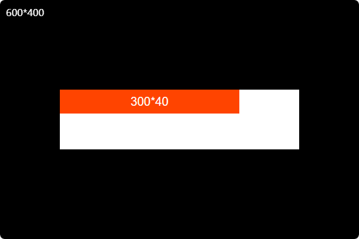

- innerText
-
返回已经渲染的节点和其后代的文本内容 - the rendered text content of a node and its descendants
- dataset
-
- popover
-
弹窗/模态框
- offsetWidth、offsetHeight
-
.元素的CSS大小 - in pixels of the element's CSS width/height, including any borders, padding, and
vertical/horizontal scrollbars
- offsetLeft、offsetTop
-
.元素的左上角相对于定位祖先元素左边和顶部的偏移距离 - upper left corner of the current element is offset to the left/from the outer
border of the current element (including its margin) to the top padding edge
- offsetParent
-
.最近的有定位的祖先元素 - the closest (nearest in the containment hierarchy) positioned ancestor element
.如果没有，则返回 <body>
.offset 原意是偏移，所以需要一个参考元素来确定自己的大小和位置；这个参考对象就是定位祖先元素
- [] 分析解读
-
case1：容器是 body，弹性布局，水平垂直居中；子项红色300*40；开发者视图调整容器尺寸为600*400
offsetWidth*offsetHeight：300*40
offsetLeft*offsetTop：150*180 = (600 - 300)/2 * (400 - 40)/2
offsetParent：<body>
-
case2：为红色增加一个父级 wrap - 白色 400*100，相对定位
offsetWidth*offsetHeight：300*40；不变
offsetLeft*offsetTop：0*0
offsetParent：<wrap>

-
case3：为白色指定绝对定位于右下角
offsetWidth*offsetHeight：300*40；不变
offsetLeft*offsetTop：100*60 = (400 - 300) * (100 - 40)
offsetParent：<wrap>；不变
- [] 波纹按钮、超链接 -
<a>、波纹按钮 - codepen
-
.单击按钮，持续产生波纹，一定时间后消失
.按钮使用相对定位 relative，为后续新增加节点提供定位依据
.为按钮添加鼠标点击事件
.利用鼠标事件对象的clientX/clientY 和元素的offsetLeft/offsetTop得到鼠标点击点在元素上的位置
.创建元素节点，并指定类和样式：绝对定位、帧动画 keyframe 等等
.延时删除新增加的元素节点 setTimeout；延时时间和动画时间保持一致
.取消按钮文字的选择 user-select: none;
.取消新增节点的事件响应 pointer-events: none;
const btn = document.querySelector('.btn');
btn.addEventListener('click', (e) => {
let div = document.createElement('div');
let posx = e.clientX - btn.offsetLeft - 15;
let posy = e.clientY - btn.offsetTop - 15;
div.style.left = posx + 'px';
div.style.top = posy + 'px';
div.className = 'dot'
btn.appendChild(div);
setTimeout(() => {
btn.removeChild(div);
}, 1000);
});
[ ] 频繁创建元素节点对系统资源的消耗
- [] 扫光、扫光 - CodePen
-
.伪元素
.鼠标移动时，设置伪元素的定位属性